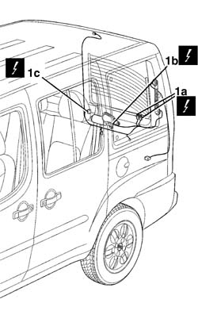
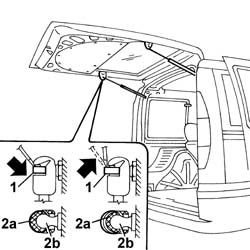
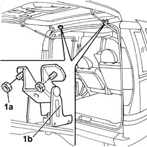

7210E56 R.R. TAILGATE
- Path
- Procedures > 72 PANELS AND FRAMES > 7210 REMOVING-REFITTING > 7210E external parts > 7210E56 R.R. TAILGATE
- Kind
- repair procedure (removal / refitting; the operation number is the code)
- Applies to
- all engines; all production periods
- Interactive page
- https://sloeber94.github.io/elrnDB-fDbl/en/#/2585267
Applies to: all engines; all production periods; only with equipment: Doblò trim level
 Removing
Removing
 Refitting
RefittingDisconnect the battery negative terminal.
Op. 7015A04 TAILGATE INTERIOR PANEL - R+R
Op. 5550D16 THIRD BRAKE LIGHT - R+R
Op. 5540A94 (ONE) NUMBER PLATE LIGHT - R.R.
1. Disconnect the electrical connectors (1a), (1b) and (1c).
 | Name | Connector |
|---|---|---|
1a | Data not available yet |
| Name | Connector |
|---|---|---|
1b | Windscreen wiper motor |
| Name | Connector |
|---|---|---|
1c | Data not available yet |

Applies to: all engines; all production periods; only with equipment: Doblò trim level
Release the electrical wiring from the retaining springs.
Withdraw the electrical wiring from the tailgate and disconnect each individual connector from the sensor.
1. Using a screwdriver prise off (without removing) the retaining clips on the telescopic ram heads, tailgate side.
2. Prise of the telescopic ram head (2a) from the fixing pin (2b), tailgate side.
Carry out the same operation for the other telescopic ram.

Applies to: all engines; all production periods; only with equipment: Doblò trim level
1. Undo the nuts (1a) fixing the hinges (1b), tailgate side.

Applies to: all engines; all production periods; only with equipment: Doblò trim level
Remove the tailgate and rest it on a suitable platform.
Applies to: all engines; all production periods; only with equipment: Doblò trim level
Refitting
RemovingCheck that the tailgate does not show damage such as bubbles, rust, dents, scratches, etc.
With the help of a second operator, fit the tailgate and screw on the hinge bolts without tightening them to torque.
Op. 7015A14 TAILGATE - ADJUST CENTRING AND PROFILE - INCLUDES HINGE AND COMPARTMENT SEAL ADAPTATION
Fit the telescopic rams, fitting the heads on the fixing pins located on the tailgate, and secure them with the retaining clip.
Connect each individual connector to the sensor used previously in order to facilitate the routing of the section of cable removed in its original position.
Pull the end of the sensor and restore the routing of the electrical wiring.
Position the electrical wiring and secure it with the new retaining bands.
Disconnect each individual electrical connector from the sensor.
Connect the electrical connections.
| Name | Connector |
|---|---|---|
- | Data not available yet |
| Name | Connector |
|---|---|---|
- | Windscreen wiper motor |
| Name | Connector |
|---|---|---|
- | Data not available yet |
Op. 5540A94 (ONE) NUMBER PLATE LIGHT - R.R.
Op. 5550D16 THIRD BRAKE LIGHT - R+R
Op. 7015A04 TAILGATE INTERIOR PANEL - R+R
Connect the battery negative terminal.